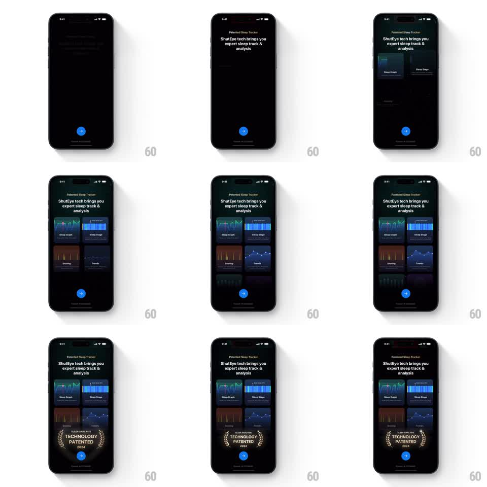

Media
Frame-by-frame

Rebuild this animation 1:1: ShutEye's patented-tracker showcase - sleep metric cards stagger into a grid under the headline, each graph drawing itself, before a laurel "TECHNOLOGY PATENTED" badge stamps in at the bottom.

Rebuild this animation 1:1: ShutEye's patented-tracker showcase - sleep metric cards stagger into a grid under the headline, each graph drawing itself, before a laurel "TECHNOLOGY PATENTED" badge stamps in at the bottom. ## Integration Integration: stack-agnostic spec - springs given as stiffness/damping, timed motions as duration + curve; map every value to your framework and animation library of choice. ## Scene A dark onboarding page: "Patented Sleep Tracker" eyebrow and the headline "ShutEye tech brings you expert sleep track & analysis". Below, a two-column grid of metric cards - Sleep Graph (teal area chart), Sleep Stage (blue bar chart), Snoring (orange waveform), Trends (dot plot), plus two dimmer upcoming cards - and a laurel-wreath badge reading "SLEEP ANALYSIS TECHNOLOGY PATENTED 2024" above the blue arrow button. ## Motion spec Pattern: staggered card grid with self-drawing graphs and badge stamp, ~3s. - The headline block fades up (300ms), then cards stagger in (120ms apart, 300ms fade-rise each) from top-left across the grid. - As each card lands, its graph draws: the area chart line sweeps left to right (600ms), bars rise (300ms with a 40ms internal stagger), the waveform traces, the dot plot's points pop in sequence. - The two upcoming cards fade in dimmer, without graph animation. - Last, the laurel badge stamps in at bottom center: scale 1.3 to 1 with a quick settle (spring stiffness 400 damping 17) and a brief glow flash. ## Calibration - A card's graph starts drawing as its fade-rise finishes - chained, not simultaneous. - The badge reads as a stamp of approval: one decisive pop, no wobble loop. ## Reduced motion Cards and badge appear static with graphs drawn. ## Don't miss - Each graph has its own color identity (teal, blue, orange) carried into the card's tint. - The badge sits between the grid and the arrow button, overlapping neither.